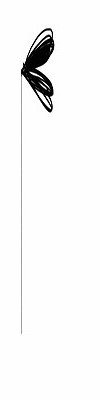

当前位置>我的主页


- 姓名：李美情
- 性别：女
- 爱好：交朋友，听音乐，打麻将（不成隐）
- 最喜欢的男明星：李易峰
- 最喜欢的女明星：赵丽颖
- 最喜欢吃：芒果
- 最喜欢的户外运动：篮球
- 最喜欢的动物：猫咪
- 性格：开朗，爱笑
- 最近在看：《心灵鸡汤》
- 座右铭：生活就像海洋， 只有意志将强的人才能到达彼岸。


面带微笑，就没有悲伤
世界上有一种很美丽的语言，它不需要你夸夸其谈，更不需要你画蛇添足去粉饰，但它却能传递给别人最奇妙、最具杀伤力的阳光般的温暖，不仅能给生命带来春天般的温馨气息，更能融化冰雪般的悲伤。正如诗人雪莱所说：微笑是仁爱的象征，快乐的源泉，亲近别人的媒介。 有一个穷苦的妇人，带着一个约莫4岁的女孩在逛街。走到一架快照.
平淡是真实的美，宁静是心灵的福
每天我们都在尽最大努力去避免我们所面临的环境中的各种污染，如空气污染、噪声污染、光源污染等。这时不知你是否忽视了另一种新的污染，你的坏情绪，就是一种情绪污染。 情绪是客观事物作用于人的感官而引起的一种心理体验。无论喜、怒、思、悲、惊，都有其原因和对象。幽静的环境、清新的空气、高尚的品德、物质的丰富、文化